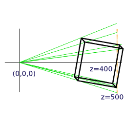

This subject could fill many books so the coverage here will be the minimum to understand why the information passed to the GPU is in the form described in the last chapter, how the vectors and matrices are generated by the pi3d code, and what the GPU does with them. I would strongly advise you to find out more about vectors by reading about them elsewhere; they’re great!
The classic definition of a vector is something that has Magnitude and Direction - a value having only magnitude being termed scalar. Arrows are often used to represent vectors but, although this analogue is very easy to understand, it is also a slight distraction that can make further understanding more difficult. The crucial thing about vectors is that they have more than one component. So whenever a value has to be uniquely defined like (x, y, z) or even (R, G, B) then that makes it a vector.
So the way a surface “points” (the normal) if often drawn as an arrow perpendicular to the surface and this can be easily understood as a vector (as can the direction of a light “ray” hitting the surface). However positions of vertices, texture coordinates, movements and rotations are all vectors as well.
At this point it’s worth thinking a little about the vector representation of rotations. A logical approach is to define the direction of an axis of rotation using three coordinates with the amount of rotation depending on the overall magnitude of the three values. However if you play around with a small box (book, mug etc), pretending it’s the “camera” used to view a scene, you will see it’s not so simple. For instance tilting the camera about the horizontal x axis (running from left to right) through 90 degrees so it’s pointing straight down, then rotating it about the vertical y axis (in GPU terms) through 90 degrees would require Euler [1] to figure out about which axis it had rotated and by how much. What’s more if order of rotation is y first then x it ends up in a different position. In pi3d a rotation vector (A, B, C) is interpreted as first rotate C about the z axis (roll), then rotate A about the x axis (pitch), finally rotate B about the y axis (yaw) as this produces the most intuitive results!
Matrices are really a short-hand way of holding structured information, and from that perspective are indistinguishable from programming arrays:
M = [[1.2, 0.0, 0.0, 1.0],
[0.0, 2.2, 1.5. 1.0],
[0.8, 0.2, 3.2. 0.0],
[0.0, 0.0, 0.0. 1.0]]
However very useful properties have been defined and implemented in mathematics and subsequently programming languages that enable efficient and fast calculations involving vectors. And, as we’ve just seen, vectors are the natural way to represent the components of 3D graphics.
The essential things to grasp without getting bogged down in the details are:
Matrices can “operate” on vectors resulting in translation (moving in some direction), scaling or rotation.
Matrices can “operate” on other matrices to produce a new matrix with a combined effect. So in pseudo-code:
# starting vector v
v = T1(v) # apply translation matrix function to v
v = R1(v) # then rotate it
v = S1(v) # then scale it (etc etc)
v = P1(v) # then to 2D screen coordinates using perspective!
# which you could write as
v = P1(S1(R1(T1(v))))
# with matrix algebra you can do
# M = P1 x T1 x R1 x S1 # termed "matrix multiplication"
M = P1(S1(R1(T1))) # or in our pseudo functional code
v = M(v)
And the reason this is useful is that we can do a relatively small amount of matrix manipulation in the python program to represent movement of shapes or the camera and “simply” pass the modified matrices to the GPU each frame for it to number crunch the actual pixel values.
Now is probably a good time to look at the first illustration program 2D_matrix01.py [2] (open a copy in an editor on your computer so you can run it as well as view it)
The objective is to get an appreciation of how matrices can be used to modify vectors so, at this stage, don’t worry about how pi3d is being used to display the output. Display, Camera, Shader, Lines, Keyboard, Font will be covered in later chapters. The whole process is inevitably complicated-looking as these details are the very thing that is done “behind the scenes” by pi3d or by the GPU! (Especially don’t be put off by the very complicated procedure to get numbers to appear near the corners)
The main bits to look at are where there are docstring explanations. There are three types of matrix defined which you can modify by pressing the keys w,a,s,d,z,x,c,v. There is also a printout of the matrices each time you press a key, to fit them in nicely you will probably have to “stretch” the terminal window to make it wide enough. Spend a reasonable time figuring out what’s happening before you move on.
In 3D_matrix01.py [3] there is an expansion into three dimensions so the transformation matrices become 4x4. If you are unclear why this is necessary it may be a good idea to go back and look at the first illustration.
Because the computer screen is essentially flat there has to be a method of converting the (x, y, z) vectors of the model into (x, y) vectors of the screen. The simplest way would be to just ignore the z values, and this is effectively what the “orthographic” projection does (when setting the Camera object up in line 10 I set the argument is_3d=False) For perspective projection there has to be a “scaling down” of x and y coordinates with distance, which is achieved using the matrix p_mat. When this operates on the vertex a scaling factor is calculated and put into the fourth “slot” of the resultant vector. In line 67 you will see that in this manual version the x and y (and z but not needed here) values are divided by the scaling factor. On the GPU the scaling is done automatically, and this is the reason why the vertex position vectors used in the OpenGL shaders are of the form (x, y, z, w) i.e. four dimensional.
Note also that the perspective modifications to the x and y values are done after the x, y and z values of the vertices have been recalculated using the transformation matrices. The scaling is done from a view point at the origin (0, 0, 0) and this is why the cube has to be displaced 400 units in the z direction to be “within shot”. If we want to modify the view by moving the camera as well as the objects in the scene (as in “first person view” games such as minecraft) then this is achieved by translating and rotating everything else in the opposite sense to the camera. i.e. in this example if the camera were to move +50 in the z direction and +50 in the x direction it would be achieved by moving the cube (-50, 0, -50). These transformations are rolled up into the camera view matrix that is passed to the GPU.
In pi3d (and 3D graphics generally) the scaling factor is calculated using a field of view angle, a screen width to height ratio, a near plane and a far plane. There is a nice interactive demo here http://webglfundamentals.org/webgl/frustum-diagram.html
3D_matrix02.py [4] switches from doing all the matrix operations manually to using the standard 3D functionality of pi3d and OpenGL. Ideally there should be no difference between the behaviour of this program and the last one apart from the switch to Fortran style matrices mentioned in the docstrings, however it’s much faster though this will not be apparent with such a simple model! It’s also dropped from 151 to 90 lines of code (excluding comments).
3D_matrix03.py [5] finally uses a pi3d.Cuboid object instead of constructing a skeleton from lines. In this program there are two Shaders, the one passed to the Lines objects (xaxis and yaxis) is “mat_flat” and the one passed to the Cuboid object (cube) is “mat_light”. The result is that the sides of the cube behave as if illuminated by a directional light as it is rotated. The way that the shaders produce the lighting effect will be covered in a later chapter but now it’s time to move away from this slightly theoretical background and start to see how the pi3d classes fit together and how they can be used in practice.
| [1] | http://en.wikipedia.org/wiki/Euler_angles#Relationship_to_other_representations |
| [2] | https://github.com/paddywwoof/pi3d_book/blob/master/programs/2D_matrix01.py |
| [3] | https://github.com/paddywwoof/pi3d_book/blob/master/programs/3D_matrix01.py |
| [4] | https://github.com/paddywwoof/pi3d_book/blob/master/programs/3D_matrix02.py |
| [5] | https://github.com/paddywwoof/pi3d_book/blob/master/programs/3D_matrix03.py |